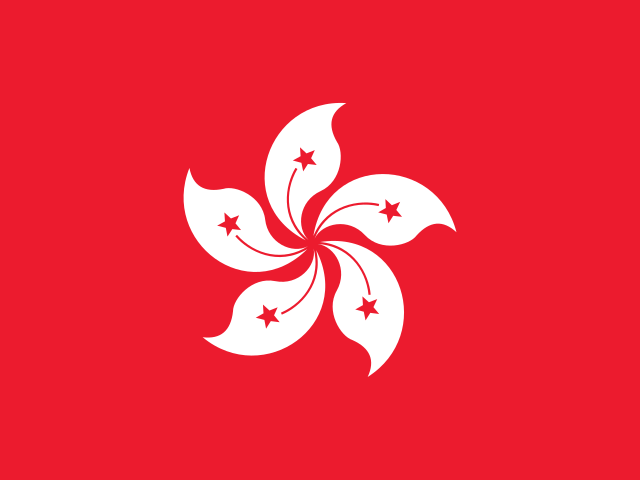

테니스 (Tennis)
![테니스 한눈에 보기. LA28 출전 규모 172명. 경기 방식: 단식 64강 → 8강 → 준결승 → 결승·동메달전. 핵심 규칙: 3세트 중 2세트를 먼저 이기면 승리하며 6-6이면 타이브레이크다. 복식·혼합복식 마지막 세트는 10점 슈퍼 타이브레이크다. 국가당 단식 최대 4명이다. 출전권 배정 (전체 172명): 일반 164, 개최국 6, 보편성 2. 세부종목별 쿼터: 남자 단식 64명 (단식 랭킹 56, ITF 자리 6, 개최국 1, 보편성 1); 여자 단식 64명 (단식 랭킹 56, ITF 자리 6, 개최국 1, 보편성 1); 남자 복식 32조 (랭킹 (직행·합산) 31, 개최국 1); 여자 복식 32조 (랭킹 (직행·합산) 31, 개최국 1); 혼합 복식 16조 (랭킹 (직행·합산) 15, 개최국 1). 예선 구조 (차례대로): ATP·WTA 단식 랭킹 56명 (2028.06.12, 국가당 4명); 대륙 우승·올림픽·그랜드슬램 우승자 6명 (2026–27, ITF 자리); 복식·혼합 합산 랭킹 32조 · 16조 (2028.06); 개최국·보편성 8명.](assets/summary/oltennis.svg)
LA28 출전 확정 2026-11-07 기준
| 국가 | 경로 | 비고 |
|---|---|---|
 홍콩 HKG | 2026 아시안게임 남자 단식 | 콜먼 웡 |
| 2026 아시안게임 여자 단식 | 왕시위 |
단식 500위 이내이고 그 국가 쿼터가 직행으로 차지 않아야 최종 확정된다.
LA28 예선 대회 결과 2026-11-08 03:33 KST
LA28 예선 대회만 싣는다. 위키백과 대회 문서에서 자동으로 모은다. 대회 중에는 한 시간마다 새로 읽는다. 한국 선수가 있는 줄은 붉게 칠했다. 하계 실시간 전체 →
아이치·나고야 아시안게임 아이치·나고야 · 09.27~10.03 종료 예선: 대륙종합대회 단식 우승 ITF 자리 · 결과 5/5종목 · 한국 금0 은1 동0
| 종목 | 금 | 은 | 동 |
|---|---|---|---|
| Medalists | |||
| 남자 단식 details | Coleman Wong 홍콩 | ||
| 남자 복식 | |||
| 여자 단식 | |||
| 여자 복식 | Eudice Chong·Wong Hong Yi 홍콩 | ||
| 혼성 복식 | |||
메달 순위:  일본 2-1-1 ·
일본 2-1-1 ·  중국 1-2-2 ·
중국 1-2-2 ·  차이니스 타이베이 1-1-2 · 홍콩 1-0-1 ·
차이니스 타이베이 1-1-2 · 홍콩 1-0-1 ·  대한민국 0-1-0 ·
대한민국 0-1-0 ·  카자흐스탄 0-0-2 ·
카자흐스탄 0-0-2 ·  필리핀 0-0-1 ·
필리핀 0-0-1 ·  우즈베키스탄 0-0-1
우즈베키스탄 0-0-1
출처: 위키백과 Tennis at the 2026 Asian Games · 2026-11-06 22:37 읽음
예선 규정
이벤트 및 출전 쿼터
남녀 단식·복식과 혼합복식에 172명이 출전한다. 쿼터는 선수 이름으로 배정된다.
| 성별 | 일반쿼터 | 개최국쿼터 | 보편성쿼터 | 합계 |
|---|---|---|---|---|
| 남자 | 82 | 3 | 1 | 86 |
| 여자 | 82 | 3 | 1 | 86 |
| 합계 | 164 | 6 | 2 | 172 |
개최국쿼터 3명 = 단식 1 + 복식 1조(2명). 직행으로 확보하면 재배정된다.
예선 경로
단식은 랭킹·ITF 자리, 복식·혼합복식은 합산 랭킹으로 정한다.
단식 · 성별 64명
단식 선발 경로
64명 · 규정 ↗
| 경로 | 쿼터 | 선발 방식 |
|---|---|---|
| (규정 D.1) 직행 (단식 랭킹) | 56명 | [1] |
| (규정 D.1) 개최국 | 1명 | [2] |
| (규정 D.1) ITF 자리 · 대륙종합대회 우승 | 4명 | [3] |
| (규정 D.1) ITF 자리 · 올림픽·그랜드슬램 우승자 | 2명 | [4] |
| (규정 D.3) 보편성 | 1명 | [5] |
- [1]2028.06.12(롤랑가로스 직후) ATP·WTA 단식 랭킹 상위 56명, 국가당 4명.
- [2]미국 최상위 선수가 직행하지 못하면 1명.
- [3]2027 팬암·2026 아시안게임·2027 아프리카게임·2027 퍼시픽게임 단식 우승자. 단식 500위 이내, 국가 쿼터가 직행으로 차지 않아야 한다. 아시안게임 우승: 남 콜먼 웡(홍콩)·여 왕시위(중국).
- [4]직행하지 못한 역대 올림픽 단식 금메달리스트·그랜드슬램 단식 우승자 2명(500위 이내).
- [5]삼자위원회가 배정한다(단식 전용). IOC 초청 2027.10.01, 신청 마감 2028.01.15.
남녀 복식 · 32조
복식 선발 경로
32조 64명 · 규정 ↗
| 경로 | 쿼터 | 선발 방식 |
|---|---|---|
| (규정 D.1) 개최국 | 1조 | [1] |
| (규정 D.1) 복식 랭킹 10위 이내 | 직행 | [2] |
| (규정 D.1) 합산 랭킹 | 24조까지 | [3] |
| (규정 D.1) 단식 우선 배정 | 남은 자리 | [4] |
- [1]미국 최상위 지명 조(합산 300위 이내)가 직행하지 못하면 1조.
- [2]복식 랭킹 1~10위 선수는 파트너가 300위 이내이고 국가 상한을 넘지 않으면 직행.
- [3]두 선수의 단식·복식 중 높은 순위를 더한 합산 랭킹 순.
- [4]성별 86명이 찬 뒤 남은 자리는 단식 출전자 2명인 조 → 1명인 조 → 나머지 순.
혼합복식 · 16조
혼합복식 선발 경로
16조 32명 · 규정 ↗
| 경로 | 쿼터 | 선발 방식 |
|---|---|---|
| (규정 D.1) 개최국 | 1조 | [1] |
| (규정 D.1) 합산 랭킹 직행 | 15조 | [2] |
- [1]미국 1조(직행하지 못한 경우).
- [2]단식·복식 출전이 확정된 선수끼리 짠 조만 신청 가능. 국가당 1조. 신청 마감 2028.07.17(예정).
개최국·보편성 쿼터
개최국 미국은 남녀 단식 1명, 복식 1조, 혼합복식 1조를 보장받는다(직행하지 못한 경우).
보편성 쿼터는 남녀 단식 1명씩이다. 신청 마감 2028.01.14.
참가 자격
올림픽 헌장(제41조 국적, 제43조 세계반도핑규약 및 경기 조작 방지 규정), 여성 카테고리 보호에 관한 IOC 정책, IOC 참가 조건 및 ITF 규정을 충족해야 한다. 국가 협회가 2027.12.31 이전부터 ITF 정회원이어야 한다.
쿼터는 선수 이름으로 배정된다. 국가 상한은 성별 6명, 단식 4명, 남녀 복식 2조, 혼합복식 1조다.
예선 일정
예선 및 대회 일정
2026년에는 아시안게임 단식에서 아시아 ITF 자리 2개가 정해졌다.
| 날짜 | 일정 |
|---|---|
| 2026.09.27–10.03 | 아이치·나고야 아시안게임 테니스 · 아시아 ITF 자리 (종료) |
| 2027 | 팬아메리칸게임·아프리카게임·퍼시픽게임 (대륙 ITF 자리) |
| 2028.01.14 | 보편성쿼터 신청 마감 |
| 2028.06.12 | 단식·복식 랭킹 기준일 |
| 2028.06.14 | ITF 출전 선수 통보 |
| 2028.06.20 | 국가 확정 · 복식 지명 · 재배정 시작 |
| 2028.06.26 | 재배정 완료 · 엔트리 마감 |
| 2028.07.17 (예정) | 혼합복식 신청 마감 |
직전 올림픽 메달리스트
2024 파리 올림픽
| 세부종목 | 금 | 은 | 동 |
|---|---|---|---|
| 남자 단식 | Novak Djokovic (SRB) | Carlos Alcaraz (ESP) | Lorenzo Musetti (ITA) |
| 남자 복식 | Matthew Ebden·John Peers (AUS) | Austin Krajicek·Rajeev Ram (USA) | Taylor Fritz·Tommy Paul (USA) |
| 여자 단식 | Zheng Qinwen (CHN) | Donna Vekić (CRO) | Iga Świątek (POL) |
| 여자 복식 | Sara Errani·Jasmine Paolini (ITA) | Mirra Andreeva·Diana Shnaider (AIN) | Cristina Bucșa·Sara Sorribes Tormo (ESP) |
| 혼합 복식 | Kateřina Siniaková·Tomáš Macháč (CZE) | Wang Xinyu·Zhang Zhizhen (CHN) | Gabriela Dabrowski·Félix Auger-Aliassime (CAN) |
대한민국
한국 출전 전망
2026-10-04 기준 참고현재 결과을 LA28 규정에 단순 적용한 참고치이며 2028 확정 전망이 아님.
인원 범위 미산정 · 아시아 ITF 자리는 홍콩·중국
아시아에 배정된 대륙종합대회 자리(남녀 1명)는 아시안게임 우승자에게 돌아갔다. 한국은 남녀 단식 모두 탈락해, 2028.06.12 ATP·WTA 랭킹 직행(성별 56명)이 남은 주 경로다.
| 선수·팀 | 공개 성적 | 근거 |
|---|---|---|
| 권순우 | 아시안게임 단식 2회전 통과 후 무릎 부상 기권 (2026.09.30) | 아주경제 |
| 아시안게임 단식 우승 | 남 콜먼 웡 (HKG) · 여 왕시위 (CHN) | Olympics.com |
단식: 56명 직행 기준은 통상 세계 60~80위권(국가당 4명 제한 반영)이다.
복식: 합산 랭킹·단식 우선 배정이라 단식 순위가 높은 선수가 있어야 유리하다.
자료 기준: 2026 아시안게임 테니스 결과. 현재 ATP·WTA 순위는 이번 조사에서 확인하지 않았다.
테니스 · 올림픽예선 | 규정 확인 2026.10.04 · 한국 전망 기준 2026.10.04
각주
외부 링크
공식 근거
- ITF · LA28 Qualification System (PDF, 2026.05.12)
- Olympics.com · 아시안게임 남자 단식 콜먼 웡 금
- Olympics.com · 아시안게임 여자 단식 왕시위 금
- 아주경제 · 권순우 무릎 부상 기권 (2026.09.30)
규정 확인일: 2026.10.04. IOC가 게시한 ITF 원문 PDF(10쪽, Version as of 12 May 2026)를 기준으로 정리했다. 보편성 신청 마감은 원문대로 2028.01.14로 적었다. 기존 테니스 페이지의 2026.5.12 버전 표기와 일치한다. 본 문서는 비공식 한국어 요약이며 최종 적용은 ITF 공지를 따른다.